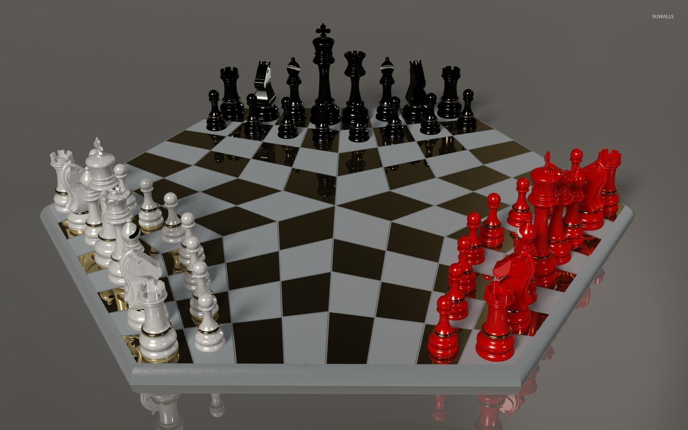

About Me
Who am I?
My name is Harsh Trivedi, and I'm going to Seneca College to study computer programming. I have made a deliberate effort to highlight the elegance and complexity of traditional games like chess because I am an Indian and deeply appreciate them. Chess, which has its roots in India and has been played for more than 1,500 years, has developed into a strategy game that is popular all over the world. The goal of the game is to checkmate your opponent's king by putting it in a position where it is under immediate attack and unable to flee. The game is incredibly complex, with each move offering a number of potential outcomes and necessitating careful thought.
Why did I create this website?
I am thrilled to develop a website devoted to disseminating knowledge about the age-old board game of chess as a chess lover. The website will offer a variety of tools, such as guides on the game's rules, descriptions of various tactics and strategies, and analyses of well-known matches played by the greatest chess players in history. In order to engage visitors and push them to consider the game critically, I also intend to include interactive tools like puzzles and quizzes. Users will be able to interact with other chess fans in the community section, share their own games and tactics, and have chess-related discussions.The main reason I started this website was to spread awareness of chess and inspire more people to start playing this fascinating game.
Honesty Statement:
Student Name: Harsh Trivedi
Date:
I declare that my assessment is wholly my own work in accordance with Seneca Academic Policy. No part of this assessment has been copied manually or electronically from any other source (including web sites) except for the information supplied by the WEB222 instructors and / or made available in this assessment for my use. I also declare that no part of this assignment has been distributed to other students.